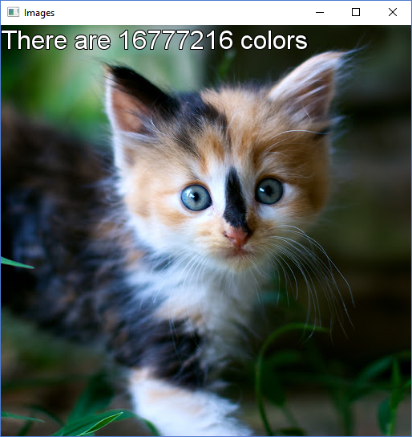

ImageTransform
ImageTransform - Done in C++ using SDL, something that I started as a little project and grew to something bigger, with trying to optimize the software rendering as much as I can. I have used a few methods to change an image, but the main algorithm I am testing is for quantization and dithering. You can drag a BMP and it will load it, and then with P or O you can increase or lower number of colors (quantization). I have a few methods that do the same but are there just for benchmarking purposes and seeing what is faster and etc. Testing I have done with up to 8K pictures, and benchmarking how long my CPU proccesses it (techniques I have used include : using cache coherence to minimize cash misses, openMP, multi-threading, SSE and AVX extensions using Intel mnemonics).

Digital Doily
Digital Doily - This is actually my first Programming II coursework at the university. It's basically a Doily maker, with a few options to change color, size of pen, numbers of refelcted sectors and etc. It's written in Java as we're studying that. (Download JAR file: Digital Doily.jar)
Physics Square
Physics square is my first try at making something in JavaScript and HTML5. It's kind of a physics simulation (a very simple one), where you control the red square with the arrow/WASD keys or you can drag it with the mouse, and you can change a few options like gravity, the bouncing coefficient (how much it bounces) and a few other option. There is also a WebGL link if you move the square to the left bottom corner, which is a little test with 3D animation I wanted to try. You can try it on this page (click here) or in its original page here.